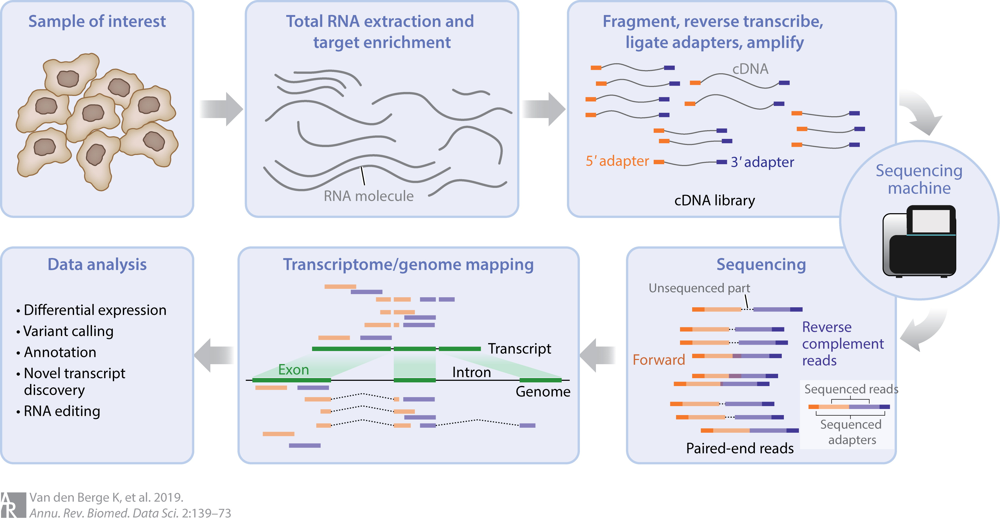

Hosted by the IIGB Bioinformatics Core
Brandon Le
Genomics Building 1207G
October 18-19, 2023
RNA sequencing or RNA-seq is one of many methods used for gene expression studies by obtaining a snapshot of the RNA molecules within a biological system.
Van den Berge et. al (2019) Annu Rev Biomed Data Sci

Next-generation sequencing (NGS) technologies
Sequencing resolution
Fastq files contain the raw sequence and the base quality score. Each sequence is comprised of four lines.
@VH01192:45:AAC7JMMM5:1:1101:19973:1000 1:N:0:AGTTCAGG+TCTGTTGG
NATGGGACAGACATGCTGGCGGCACTCACTCACTTGGGCGGCTTAGATCGGAAGAGCACACGTCTGAACTCCAGTCACAGTTCAGGATCTCGTATTCCCTTTTTTTTTTGTAAATTTTTGGGGGGGGGGGGGGGGGGGGGGGGGGGGGGGG
+
#-C;;CCCCC-C-CCCCCCCCC-CCCCCCCCCCCCCCCCCCC-CCCCCCCC-CC-CCCCCCCCC-CC-CCCCCCCCC;-C--CC-CCCC--CC-C--;---;C----;-;CC-------C-C-C-C--CCCC-;C;CCC-CCCCCCCCCCC
@VH01192:45:AAC7JMMM5:1:1101:20125:1000 1:N:0:AGTTCAGG+TCTGTTGG
NCCCAGCCCCAGCGACTCCTAATAAAGCATTTCAGCAAATAAAAAAAAAAAAAAAAAGATCGGAAGAGCACACGTCTGAACTCAAGTCACAGTTCAGGATGTGGTTTTTGGTTTTTTTTTTTTTAAATTTTGGGGGGGGGGGGGGGGGGGG
+
#CCCCCCCCCCCCCCCCCCCCCCCCCCCCCCCCCCCCCC--CCCCCCCCCCCCCCCC;CCCC-CCCCCCCCCC---C-C---C-CC-CCCCC;CC-CC-C--;C-CC-------C-C---C-C----CC;C-CCCC;C;CCCCCCCCCCCC
@VH01192:45:AAC7JMMM5:1:1101:21034:1000 1:N:0:AGTTCAGG+TCTGTTGG
NTTGCAATGCTCAATAAGTCTATTCCACCTCAGTGTCCTTTTTAAAGAGTTTTGGAAAAAAAAAAAAAAAAAAAGATCGTAAGAGCACACGTCTGAACTCCAGTCACAGTTCAGGTTGTGGGTTTTCGTGTTTTTGTTTTTATTTTTGGGG
+
#CCCCCCCCCCCCCCCCCCCCCCCCCCCCCCCCCCCCCC-CCCCC;C;CCCCCCCCCCCCCCCCCCCCCCCCCC-CC;C-CC-C;CCCCCC;C;CC-CCCCC;;;CCC-;;C;-;-C---C-C;;;--C-CCCC---C;C-----C;--C-
@VH01192:45:AAC7JMMM5:1:1101:21488:1000 1:N:0:AGTTCAGG+TCTGTTGG
NCCTCAAAAAAAAAAAAAAAAAAAAAAAAAATTTGGTATGTGAAATTTTTTTAATACATTTAAATTTTATGTTTTTGTTTTTCTTTTTTTTTTTTTTAAATATTGGGGGGGGGGGGGGGGGGGGGGGGGGGGGGGGGGGGGGGGGGGGGGG
+
#CCCCCCCCCCCCCCCCCCCCCCCCCCCCC-;---C-C;-;------CCCCCC;--CC--C-C-;-C-C--;C;-----C-C--CCCC-C--;C-C---C-;C;-C-C;CCCCCCCCC;CCCCC-CCCCCCCCCCC;C;CCCCCCCC;CCC
@VH01192:45:AAC7JMMM5:1:1101:19973:1000 1:N:0:AGTTCAGG+TCTGTTGG
| Identifier | Description |
|---|---|
| VH01192 | unique instrument id |
| 45 | run id |
| AAC7JMMM5 | flowcell id |
| 1 | flowcell lane |
| 1101 | tile number within the flowcell lane |
| 19973 | x-coordinate of the cluster within the tile |
| 1000 | y-coordinate of the cluster within the tile |
| 1 | Member of a read/mate pair, 1 or 2 |
| N | Y if the read is filtered, N otherwise |
| 0 | 0 when none of the control bits are on |
| AGTTCAGG+TCTGTTGG | Index sequence |
Sequence alignment map (SAM) format official documentation is available here. The SAM file consists of a header and rows for each read. Each row contains 11 mandatory fields.
Quality Control
Sequence Alignment
Quantification
Differential expression
Data Visualization
R and R packages
BioProject: PRJNA950346
GEO Series: GSE228555
Title: Transcriptome expression of WT and mir163 mutant
Organism: Arabidopsis thaliana
Ecotype: Col-0
Genotype(s): WT, miR163 mutant
Biological replicates: 3
Tissue: Seedlings
Library kit: NEBNext® Ultra™ RNA Library Prep Kit for Illumina (non-stranded)
Sequencing: Illumina paired-end 150bp
Generate a metadata.csv file containing information about the dataset. The metadata will be used for processing and differential expression analysis.
srr_id,ecotype,genotype,treatment,tissue,biorep,samplename,fq1,fq2
SRR24016000,Col-0,miR163_mut,7-day-old seedlings without treatment,seedlings,1,mir163_1,raw/SRR24016000_1.fastq.gz,raw/SRR24016000_2.fastq.gz
SRR24016001,Col-0,miR163_mut,7-day-old seedlings without treatment,seedlings,2,mir163_2,raw/SRR24016001_1.fastq.gz,raw/SRR24016001_2.fastq.gz
SRR24016002,Col-0,miR163_mut,7-day-old seedlings without treatment,seedlings,3,mir163_3,raw/SRR24016002_1.fastq.gz,raw/SRR24016002_2.fastq.gz
SRR24016003,Col-0,wt,7-day-old seedlings without treatment,seedlings,1,wt_1,raw/SRR24016003_1.fastq.gz,raw/SRR24016003_2.fastq.gz
SRR24016004,Col-0,wt,7-day-old seedlings without treatment,seedlings,2,wt_2,raw/SRR24016004_1.fastq.gz,raw/SRR24016004_2.fastq.gz
SRR24016005,Col-0,wt,7-day-old seedlings without treatment,seedlings,3,wt_3,raw/SRR24016005_1.fastq.gz,raw/SRR24016005_2.fastq.gzWe will run QC using Fastqc and trim_galore.
trim_galore will also run fastqc on the trimmed dataset.
$ ls analysis/fastqc
SRR24016000_1_fastqc.html
SRR24016000_1_fastqc.zip
SRR24016000_2_fastqc.html
SRR24016000_2_fastqc.zip
SRR24016001_1_fastqc.html
SRR24016001_1_fastqc.zip
SRR24016001_2_fastqc.html
SRR24016001_2_fastqc.zip
SRR24016002_1_fastqc.html
SRR24016002_1_fastqc.zip
SRR24016002_2_fastqc.html
SRR24016002_2_fastqc.zip
SRR24016003_1_fastqc.html
SRR24016003_1_fastqc.zip
SRR24016003_2_fastqc.html
SRR24016003_2_fastqc.zip
SRR24016004_1_fastqc.html
SRR24016004_1_fastqc.zip
SRR24016004_2_fastqc.html
SRR24016004_2_fastqc.zip
SRR24016005_1_fastqc.html
SRR24016005_1_fastqc.zip
SRR24016005_2_fastqc.html
SRR24016005_2_fastqc.zip$ ls analysis/trim_galore
mir163_1_val_1_fastqc.html
mir163_1_val_1_fastqc.zip
mir163_1_val_1.fq.gz
mir163_1_val_2_fastqc.html
mir163_1_val_2_fastqc.zip
mir163_1_val_2.fq.gz
mir163_2_val_1_fastqc.html
mir163_2_val_1_fastqc.zip
mir163_2_val_1.fq.gz
mir163_2_val_2_fastqc.html
mir163_2_val_2_fastqc.zip
mir163_2_val_2.fq.gz
mir163_3_val_1_fastqc.html
mir163_3_val_1_fastqc.zip
mir163_3_val_1.fq.gz
mir163_3_val_2_fastqc.html
mir163_3_val_2_fastqc.zip
mir163_3_val_2.fq.gz
SRR24016000_1.fastq.gz_trimming_report.txt
SRR24016000_2.fastq.gz_trimming_report.txt
SRR24016001_1.fastq.gz_trimming_report.txt
SRR24016001_2.fastq.gz_trimming_report.txt
SRR24016002_1.fastq.gz_trimming_report.txt
SRR24016002_2.fastq.gz_trimming_report.txt
SRR24016003_1.fastq.gz_trimming_report.txt
SRR24016003_2.fastq.gz_trimming_report.txt
SRR24016004_1.fastq.gz_trimming_report.txt
SRR24016004_2.fastq.gz_trimming_report.txt
SRR24016005_1.fastq.gz_trimming_report.txt
SRR24016005_2.fastq.gz_trimming_report.txt
wt_1_val_1_fastqc.html
wt_1_val_1_fastqc.zip
wt_1_val_1.fq.gz
wt_1_val_2_fastqc.html
wt_1_val_2_fastqc.zip
wt_1_val_2.fq.gz
wt_2_val_1_fastqc.html
wt_2_val_1_fastqc.zip
wt_2_val_1.fq.gz
wt_2_val_2_fastqc.html
wt_2_val_2_fastqc.zip
wt_2_val_2.fq.gz
wt_3_val_1_fastqc.html
wt_3_val_1_fastqc.zip
wt_3_val_1.fq.gz
wt_3_val_2_fastqc.html
wt_3_val_2_fastqc.zip
wt_3_val_2.fq.gzTo run the STAR aligner, we first need to create an index of the genome.
To generate an index, you’ll need the following files:
FASTA: Fasta file containing sequences of all the chromosomes/scaffolds for the genome GTF/GFF: General Transfer Format (GTF) or General Feature Format (GFF)
>Chr1 CHROMOSOME dumped from ADB: Jun/20/09 14:53; last updated: 2009-02-02
CCCTAAACCCTAAACCCTAAACCCTAAACCTCTGAATCCTTAATCCCTAAATCCCTAAATCTTTAAATCCTACATCCAT
GAATCCCTAAATACCTAATTCCCTAAACCCGAAACCGGTTTCTCTGGTTGAAAATCATTGTGTATATAATGATAATTTT
ATCGTTTTTATGTAATTGCTTATTGTTGTGTGTAGATTTTTTAAAAATATCATTTGAGGTCAATACAAATCCTATTTCT
TGTGGTTTTCTTTCCTTCACTTAGCTATGGATGGTTTATCTTCATTTGTTATATTGGATACAAGCTTTGCTACGATCTA
CATTTGGGAATGTGAGTCTCTTATTGTAACCTTAGGGTTGGTTTATCTCAAGAATCTTATTAATTGTTTGGACTGTTTA
TGTTTGGACATTTATTGTCATTCTTACTCCTTTGTGGAAATGTTTGTTCTATCAATTTATCTTTTGTGGGAAAATTATT
TAGTTGTAGGGATGAAGTCTTTCTTCGTTGTTGTTACGCTTGTCATCTCATCTCTCAATGATATGGGATGGTCCTTTAGChr1 Araport11 5UTR 3631 3759 . + . transcript_id "AT1G01010.1"; gene_id "AT1G01010"
Chr1 Araport11 exon 3631 3913 . + . transcript_id "AT1G01010.1"; gene_id "AT1G01010"
Chr1 Araport11 start_codon 3760 3762 . + . transcript_id "AT1G01010.1"; gene_id "AT1G01010"
Chr1 Araport11 CDS 3760 3913 . + 0 transcript_id "AT1G01010.1"; gene_id "AT1G01010"
Chr1 Araport11 exon 3996 4276 . + . transcript_id "AT1G01010.1"; gene_id "AT1G01010"
Chr1 Araport11 CDS 3996 4276 . + 2 transcript_id "AT1G01010.1"; gene_id "AT1G01010"
Chr1 Araport11 exon 4486 4605 . + . transcript_id "AT1G01010.1"; gene_id "AT1G01010"
Chr1 Araport11 CDS 4486 4605 . + 0 transcript_id "AT1G01010.1"; gene_id "AT1G01010"
Chr1 Araport11 exon 4706 5095 . + . transcript_id "AT1G01010.1"; gene_id "AT1G01010"
Chr1 Araport11 CDS 4706 5095 . + 0 transcript_id "AT1G01010.1"; gene_id "AT1G01010"
Chr1 Araport11 exon 5174 5326 . + . transcript_id "AT1G01010.1"; gene_id "AT1G01010"
Chr1 Araport11 CDS 5174 5326 . + 0 transcript_id "AT1G01010.1"; gene_id "AT1G01010"
Chr1 Araport11 CDS 5439 5630 . + 0 transcript_id "AT1G01010.1"; gene_id "AT1G01010"
Chr1 Araport11 exon 5439 5899 . + . transcript_id "AT1G01010.1"; gene_id "AT1G01010"
Chr1 Araport11 stop_codon 5628 5630 . + . transcript_id "AT1G01010.1"; gene_id "AT1G01010"
Chr1 Araport11 3UTR 5631 5899 . + . transcript_id "AT1G01010.1"; gene_id "AT1G01010"
Chr1 Araport11 exon 6788 7069 . - . transcript_id "AT1G01020.2"; gene_id "AT1G01020"
Chr1 Araport11 3UTR 6788 7069 . - . transcript_id "AT1G01020.2"; gene_id "AT1G01020"
Chr1 Araport11 3UTR 7157 7314 . - . transcript_id "AT1G01020.2"; gene_id "AT1G01020"##gff-version 3
Chr1 Araport11 gene 3631 5899 . + . ID=AT1G01010;Name=AT1G01010;Note=NAC domain containing protein 1;symbol=NAC001;Alias=ANAC001,NAC domain containing protein 1;full_name=NAC domain containing protein 1;computational_description=NAC domain containing protein 1 (NAC001)%3B FUNCTIONS IN: sequence-specific DNA binding transcription factor activity%3B INVOLVED IN: multicellular organismal development%2C regulation of transcription%3B LOCATED IN: cellular_component unknown%3B EXPRESSED IN: 7 plant structures%3B EXPRESSED DURING: 4 anthesis%2C C globular stage%2C petal differentiation and expansion stage%3B CONTAINS InterPro DOMAIN/s: No apical meristem (NAM) protein (InterPro:IPR003441)%3B BEST Arabidopsis thaliana protein match is: NAC domain containing protein 69 (TAIR:AT4G01550.1)%3B Has 2503 Blast hits to 2496 proteins in 69 species: Archae - 0%3B Bacteria - 0%3B Metazoa - 0%3B Fungi - 0%3B Plants - 2502%3B Viruses - 0%3B Other Eukaryotes - 1 (source: NCBI BLink).;Dbxref=PMID:11118137,PMID:12820902,PMID:15029955,PMID:15010618,PMID:15108305,PMID:15173566,PMID:15282545,PMID:16504176,PMID:16547105,PMID:16524982,PMID:16720694,PMID:16552445,PMID:17339215,PMID:17448460,PMID:17447913,PMID:18650403,PMID:20736450,PMID:24377444,locus:2200935;locus_type=protein_coding
Chr1 Araport11 mRNA 3631 5899 . + . ID=AT1G01010.1;Parent=AT1G01010;Name=AT1G01010.1;Note=NAC domain containing protein 1;conf_class=2;symbol=NAC001;Alias=ANAC001,NAC domain containing protein 1;full_name=NAC domain containing protein 1;computational_description=NAC domain containing protein 1 (NAC001)%3B FUNCTIONS IN: sequence-specific DNA binding transcription factor activity%3B INVOLVED IN: multicellular organismal development%2C regulation of transcription%3B LOCATED IN: cellular_component unknown%3B EXPRESSED IN: 7 plant structures%3B EXPRESSED DURING: 4 anthesis%2C C globular stage%2C petal differentiation and expansion stage%3B CONTAINS InterPro DOMAIN/s: No apical meristem (NAM) protein (InterPro:IPR003441)%3B BEST Arabidopsis thaliana protein match is: NAC domain containing protein 69 (TAIR:AT4G01550.1)%3B Has 2503 Blast hits to 2496 proteins in 69 species: Archae - 0%3B Bacteria - 0%3B Metazoa - 0%3B Fungi - 0%3B Plants - 2502%3B Viruses - 0%3B Other Eukaryotes - 1 (source: NCBI BLink).;conf_rating=****;Dbxref=PMID:11118137,gene:2200934,UniProt:Q0WV96
Chr1 Araport11 five_prime_UTR 3631 3759 . + . ID=AT1G01010:five_prime_UTR:1;Parent=AT1G01010.1;Name=NAC001:five_prime_UTR:1
Chr1 Araport11 exon 3631 3913 . + . ID=AT1G01010:exon:1;Parent=AT1G01010.1;Name=NAC001:exon:1
Chr1 Araport11 CDS 3760 3913 . + 0 ID=AT1G01010:CDS:1;Parent=AT1G01010.1;Name=NAC001:CDS:1
Chr1 Araport11 exon 3996 4276 . + . ID=AT1G01010:exon:2;Parent=AT1G01010.1;Name=NAC001:exon:2
Chr1 Araport11 CDS 3996 4276 . + 2 ID=AT1G01010:CDS:2;Parent=AT1G01010.1;Name=NAC001:CDS:2
Chr1 Araport11 exon 4486 4605 . + . ID=AT1G01010:exon:3;Parent=AT1G01010.1;Name=NAC001:exon:3
Chr1 Araport11 CDS 4486 4605 . + 0 ID=AT1G01010:CDS:3;Parent=AT1G01010.1;Name=NAC001:CDS:3
Chr1 Araport11 exon 4706 5095 . + . ID=AT1G01010:exon:4;Parent=AT1G01010.1;Name=NAC001:exon:4
Chr1 Araport11 CDS 4706 5095 . + 0 ID=AT1G01010:CDS:4;Parent=AT1G01010.1;Name=NAC001:CDS:4
Chr1 Araport11 exon 5174 5326 . + . ID=AT1G01010:exon:5;Parent=AT1G01010.1;Name=NAC001:exon:5
Chr1 Araport11 CDS 5174 5326 . + 0 ID=AT1G01010:CDS:5;Parent=AT1G01010.1;Name=NAC001:CDS:5
Chr1 Araport11 CDS 5439 5630 . + 0 ID=AT1G01010:CDS:6;Parent=AT1G01010.1;Name=NAC001:CDS:6
Chr1 Araport11 exon 5439 5899 . + . ID=AT1G01010:exon:6;Parent=AT1G01010.1;Name=NAC001:exon:6
Chr1 Araport11 three_prime_UTR 5631 5899 . + . ID=AT1G01010:three_prime_UTR:1;Parent=AT1G01010.1;Name=NAC001:three_prime_UTR:1Now we can align the reads from each sample to the reference genome
while IFS=, read -r srr_id eco geno trt tiss biorep samplename fq1 fq2
do
sbatch code/STAR-align.sh $samplename
done < <(tail -n +2 raw/metadata.csv)Output
wt_1_Aligned.sortedByCoord.out.bam
wt_1_Aligned.sortedByCoord.out.bam.bai
wt_1_Log.final.out
wt_1_Log.out
wt_1_Log.progress.out
wt_1_ReadsPerGene.out.tab
wt_1_Signal.UniqueMultiple.str1.out.wig
wt_1_Signal.UniqueMultiple.str2.out.wig
wt_1_Signal.Unique.str1.out.wig
wt_1_Signal.Unique.str2.out.wig
wt_1_SJ.out.tabThe BAM file produced from STAR contains alignment information that can be viewed in IGV. However, this file can be big and sluggish so one option is convert the BAM file to BigWig format that will allow fast visualization of the results. Note: the BigWig format will lose individual read information.
Now we can align the reads from each sample to the reference genome